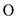
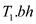
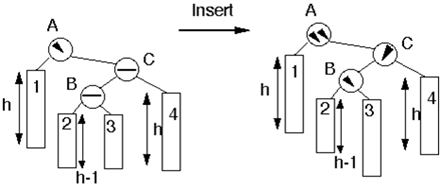
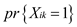

PERSISTENT DYNAMIC SETS
Sometimes during the implementation of the algorithm, we come across the situation that the past versions of the dynamic set need to be updated. This type of set is known as persistent set. There are various methods to implement a persistent set. One such method is to copy all the set when it is modified, but this causes the problem in terms of slowing of the program and space consuming.
In order to avoid the problem, there are various operations which are performed by the persistent set, which are as follows:
• Searching
• Insertion
• Deletion
a. Insertion of a key k: When the insertion of key k is performed, then all the nodes which are found in case of traversing from the root to the new nodes, (new nodes are the nodes which are added afterward) should be changed. There is need for pointer for a new child, which propagates from new nodes to its entire parent.
Deleting the node y: When a node y is deleted and z is the node which is to be deleted, then in the process, different cases arise.
1. If the child of y is at most one, then it is either removed or spliced out and the ancestor of y also gets changed.
2. If the node z consists of two children, and y is the successor of z, then in this case, y will be removed and thus it is moved to the position of the successor of z.
In this way, all the ancestors of both y and z are changed. In any case, the children of y’s successor are unchanged (if any), as it is supposed that there is no parent field in this case.
b. It is assumed that two procedures are called in this case:
• MAKE-NEW-NODE (k): In this, key values are k and the entire field whether left subtree or right subtree is NIL; and after that pointer to the new node is returned.
• COPY-NODE (x): creates a new node whose key, left, and right fields, all have the value similar to the node x; and after that, pointer to the new node is returned.
PERSISTENT-TREE-INSERT is written in two ways. The first is a version of TREE-INSERT, modified to create new nodes. The new nodes will traverse and will not consider the parent nodes. This helps in returning the new root of the tree.
PERSISTENT-TREE-INSERT (T, k)
z  MAKE-NEW-NODE (k)
MAKE-NEW-NODE (k)
new-root COPY-NODE
(T.root)
y NIL
x
new-root
while x _= NIL
do
y
x
if z.key < x.key
then x COPY-NODE
(x.left)
left[y]
x
else
x COPY-NODE
(x.right)
y.right
x
if y = NIL
then new-root
z
else if z.key
then y.left
z
else y.right
z
return new-root
The second method is a recursive procedure, which calls T.root instead of T as its first arguments; and after that, it returns the new root of the new tree.
PERSISTENT-TREE-INSERT(r, k)
if r = NIL
then x
MAKE-NEW-NODE (k)
else x
COPY-NODE(r)
if k
then x.left
PERSISTENT-TREE-INSERT (r.left, k)
else x.right
PERSISTENT-TREE-INSERT (r.right, k)
c. PERSISTENT-TREE-INSERT contain constant amount of work. The work is done at each and every node in the path starting from root to the recently created node. Length of the PERSISTENT-TREE-INSERT is h and thus the complexity is time. As new node is allocated so each inserted nodes needs space.
d. If parent fields were there, then each and every node will require copying of the new node when it is inserted. In order to know the reason why this happens, consider the following point:
1. Children of the root would change to point to the new root.
2. Children will again change to point to the new nodes; this process continues whenever a new node is inserted.
As there are n nodes, for insertion we create . New nodes which take time.
e. Referring to part (a) and part (c) of the problem, we
will have familiarity that when we perform insertion into a
persistent binary search tree of height h, worst time of
.
is
the height of red-black tree. So the insertion will have the time
complexity equal to . This can
be derived by the following condition:
. This can
be derived by the following condition:
? In order to find the parent pointer is in (1) time without the parent field utilisation. It cannot be utilised as for insertion parent field will take (n) time.
? And during the red black tree operation, there will not be any
changes in the additional node. Then, additional
nodes will change.
During the insertion operations, RB-INSERT is called, which
calls RBINSERT- FIXUP. It needs parent pointers to move along the
path. It performs two rotations which take time to
change nodes. Hence, the worst-case time complexity is equal to
time.
The deletion in the red-black-tree is time which
has same time complexity as during the insertion. In deletion
RB-DELETE-FIXUP is called in which 3 rotations are performed at
least, which take time, which
are discussed above during the insertion operations. Hence, the
worst case time complexity is equal to.
RED BLACK TREE
Red black tree is the type of binary search tree in which an extra attribute is colored with either red or black. There are special properties of the red black tree, which are as follows:
1. In case the red black tree node is colored with either red or black.
2. Every leaf is black.
3. The root node is black.
4. If one of the nodes is red, then children are black.
5. If a node is black, then it can have either black or red children.
6. Every way from descendant node to the leaf will contain equal number of black nodes.
7. In any path, there should not be any consecutive number of red nodes.
JOIN OPERATION ON RED BLACK TREE: We take two dynamic sets for join operation sets S and B and an element m; join operation is done as,
Join(S, m, B)
Input:
1. Set S with pairs of small keys.
2. Set b with pairs of big keys.
3. An additional pair m.
4. All keys in S are smaller than m.key.
5. All keys in B are bigger than m.key.
Output:
1. Set that contains all the pairs of S, B and m.
2. Set S and B may be destroyed.
a. In the problem, we have a Red-black tree T, and its black depth is stored in an attribute T.bh. And we have to perform the insert and delete operation without requiring extra storage for the nodes in a tree and without increasing the running times. So, now we consider that for an empty black tree we have initialized its black depth to be 0.
Insertion: When we insert a node its black depth will increase, and when we perform deletion, black depth decreases. If during insertion, while rebalancing goes to the root, then root color changes to red and after, that painted to blank. In this case, we increment bh by 1. After that, black nodes are added, which implies this is the only position where black node can be inserted.
Deletion: When deletion is performed, if the extra black goes to the root then we decrease bh by one. This is the only place where the black nodes are removed from the tree.Thus, it clarifies that (1) production is required for maintaining bh. During traversing the tree in the downwards position, tree bh of a node is visited starting from the root node of tree and then subtracted by 1 when the black node is encountered in case of traversing. Thus in this case, complexity is (1) for each node.
b. Here in the given problem, there is an assumption that ; and we have described the algorithm that discovers a black node in y in T1 with the largest key from among the nodes which has its black depth as. So in order to do this, we can just descend down the rightmost path of the tree; it means that we always go right, if during the process we find a right child otherwise goes to left child.
Each time we go down, the height of black node decreases by 1 each time we get a black node. Till we reach the black node with its bh value equal to, when largest key of the black height is found, then the height of the red-black tree is. All this
operation requirestime.c. Here it is given that is the sub tree rooted at Y. So in order to replace by in (1) time, insert x into the place where y was in. By making the node y as the left child and the root as the right child of x and it is given that .By considering this, we conclude that binary tree property doesn’t change, which implies that it remains the same. Thus, the time complexity is (1).
d. To make an insertion into a red-black tree, we have to call RB-INSERT which in order will call: RBINSERT- FIXUP. As RB-INSERT walks down the tree to find the place to insert the new node, have it build a stack of the nodes it traverses and pass this stack to RB-INSERT-FIXUP. RB-INSERT-FIXUP needs the root pointer to traverse the same path, and at a particular time it requires the root pointer, in order to find the parents and grandparents of the node on which it is performed.
In order to maintain the properties 1, 3, 5 of the
Red-Black tree, we have to make the colour of
x as red. To introduce properties 2 and
4 we have to execute RB-INSERT-FIXUP (, x).
And as we know that black depth of is equal to
so, RB-INSERT-FIXUP WORKS here. And it runs in time.
e. If the situation is like, then in order to find the smallest black node which has the bh value as equal to, we will have to move downward in the tree T2 along the leftmost path. Hence, they are same.
f. RED-BLACK-JOIN will be implemented with the help of
previous part of the problem as described. As described we have
found that black-depth can be calculated and maintained in
(1)
time. And the required black node y can be found in
time.
Time complexity of the “join” operation is (1), and
thus properties of red-black tree in times.
So, the overall running time is of the order .
AVL TREES
It is such type of binary search tree which itself, is balanced. In an AVL tree the heights of the children subtrees of any node can have the difference of one at maximum. When the height difference is more than one, then rebalancing is done on it.
Various operations can be performed on an AVL tree:
1.Insertion.
2.Deletion.
3.Lookup.
Various operations such as deletion, insertion, lookup
take time in
average and the worst cases.
time in
average and the worst cases.
Here, n represents the number of total nodes that are in
the tree and are measured prior to the operation. Perform various
rotation for the making the tree balance again during the process
of insertion and deletion. An AVL tree is a height balanced but
neither weight balanced nor  balanced.
balanced.
a .
Consider that Fh represents the number of nodes with height h and Fh means Hth Fibonacci number and as in an AVL tree, a relationship exists that in an AVL tree the heights of two children subtree of any node differ by at most one. In an AVL-tree, the root has two children: one with height h–1 and the other with height at least h–2.
So the following relationship holds,
Apply log on both the sides.
F h represents number of nodes with height h
In this problem if Fh is replaced with
n then the conclusion will be that height h is
.
b.
There are different cases in insertion as follows:
1. Here insertion is performed at node 3. Due to which there is height imbalance which is balanced with the help of rotation.
After single rotation:
2. Insertion is performed at the node 2 or 3.

After double rotation:
The pseudocode for the above said procedure would look like the following:
BALANCE(x)
// if condition to check whether the difference in height of left and right child is less than1 if height(x.left) – height(x.right) ≤ 1 // if condition is satisfied, return the value of x
return x else
// if condition to check whether the height of right child is greater than height of left
// child
if height(x.left) < height(x.right)
y = x.right // if condition to check whether the value of left child is less than value of right child
if y.left < y.right // return the value obtained after left rotation in x
return left-rotate(x) else
// Make a right rotation in y right-rotate(y) return left-rotate(x) else
y = x.right // if condition to check whether the value of right child is less than value of left child
if y.right < y.left // Return the value obtained after right rotation in x
return right-rotate(x) else left-rotate(y) // Return the value obtained after right rotation in x
return right-rotate(x)
c.
As directed in the question as referring through part (b).The pseudo-code for INSERT is as follows. The notion is to call recursively the INSERT on the proper subtree, and then BALANCE is called to maintain the balance.
AVL-INSERT(x, z)
// if condition to check whether the value of x is null
if x = = nil
// Make the height of the z as 0 and then return the value of z
z.height = 0
return z
// if condition to check whether the key stored in z is less than or equal to key in x
if z.key ≤ x.key
// Insert the value
y = AVL-INSERT(x.left, x)
x.left = y
else
// Insert the value
y = AVL-INSERT(x.right, x)
// Make y as right child of x
x.right = y
// Make x as right parent of y
y.parent = x
// The height of y is 1 more than the height of x
x.height = y.height + 1
x = BALANCE(x)
// Return the value of x
return x
d.
It is already known that the height of the AVL tree is time. So
insertion and the update operation will take time correspondingly
that is equal totime. And as
described above that in the balance operation in part
(b), the height of the original unbalanced tree is
decreases by 1 after the rotation.
So it will not cause any process of rotations to the rest of the
tree. In other words it can be said that only one node is
concerned in each rotation. So that will be  .
.
It satisfy the condition that AVL-INSERT take time to
insert the node and perform
rotation.
TREAP
Treaps is a type of binary search tree having a modified form of ordering the nodes. This is called as a Treaps, because it contains the properties of both the heap and the binary search tree. In Treaps, each node is a combination of the key value x.key and the priority value x.priority, which is any number chosen randomly for each node.
The key value in the Treaps follows a binary search tree property and the priority value follow min-heap property (means the parent node has lower value than its child).
It holds the condition:
1. If v is a left child of u, then v.key < u.key.
2. If v is a right child of u, then v.key > u.key.
3. If v is a child of u, then v.prionty > u.priority.
a.
Treaps has unique keys and priority, the node with minimum priority will be root and the node with less key and more priority will be in the left sub tree, and in the left sub tree min priority node will be the root and so on.
This also applies to right sub tree of root (nodes with more priority and more key value). And the tree resulting from the above process is always unique.
Apply mathematical induction to prove this:
Here, induction is applied on all nodes in the Treaps.
Initially, the tree contains no node, then in that situation, the Treaps is trivially unique.
Suppose, one node is present in the Treaps, then by using the process of mathematical induction, it can be justified that if value of k=1, then only one node is present in the Treaps which represents that the Treaps is unique.
Illustrate this by using an example which is as shown below:
|
Key |
Priority |
|
a |
1 |
In this, Treaps contains only one node with key and priority given to it as shown in the below diagram:
In the above diagram, Treaps contains only one node that is root node. As Treaps has no other nodes, it satisfies all the property of Treaps and thus the Treaps is unique.
Suppose, there is k+1 node, then, by the process of mathematical induction, it can be proved that if value of k=k+1, then the Treaps is unique. If the key of new nodes is less than the root node, then the new node is added to the left of the root, otherwise it is added to the right.
Alternatively, uniqueness of Treaps can also be proved in the order of priority, which is shown by the example.
Illustrating this by using an example which is as shown below:
|
Key |
Priority |
|
a |
2 |
|
b |
1 |
|
c |
3 |
|
d |
4 |
In this, Treaps contains four nodes with key and priority assigned to it.
Diagram:
In the above diagram Treaps contains only four nodes, minimum priority node should be place at the root. After that highest priority from the root node is assigned as the child of the root node.
Here, 1 is smallest priority so, it is the root node. After that 2, 3 and 4 is the highest priority from the root node. Now select the priority “2” and check its key value which is “a”. “a” is less than “b”, so it is assigned left to the root node.
After that 3 and 4 is the highest priority. Now select the priority “3” and check its key value which is “c”. “c” is greater than “b”, so it is assigned right to the root node.
After that 4 is the highest priority and check its key value which is “d”. “d” is greater than “c”, so it is assigned right to the corresponding root node.
Time taken to search a key in Treaps is the same as
searching in binary trees that has been randomly built. It is found
that time taken is equal to the key’s depth of the node. In binary
search tree, that has been randomly built, the expected depth
is .
.
Thus, the height of Treaps is also and the
expected time to search for a key in the Treaps is.
c.
Insert elements in the binary tree to preserve priority and perform min heap procedure. The BST-INSERT procedure is called usually to insert the new node x into the Treaps. Then, take a glance at x’s parent. If priority of x is larger than x’s parent, then rotation is performed based on the condition whether x is a left or right child. Treaps processes the same procedure until the root node has been traced.
PSEUDO-CODE:
TREAP-INSERT
TREE-INSERT
while x!= T.root and priority.x < priority.x.p
do
if x= x.p.left
then RIGHT-ROTATE
else
LEFT-ROTATE
d.
Firstly, TREAP-INSERT performs Binary search tree’s Insert procedure and after that rotation is performed in order to restore the property of min heap.
Basically insertion algorithm of binary search tree, inserts the new node at a new leaf. Hence, whenever an item is inserted into a Treaps then time for the insertion of item is directly proportional to height of binary search tree which is built randomly.
This procedure runs proportionally with the depth of Tree in
time of which is
proved in the upper part, after this it performs rotation. Rotation
operations should satisfy min heap property. These Rotations
runs in constant time,
So running time which is expected from TREAP-INSERT is
Illustrating this by using an example which is as shown below:
In the above diagram a new node is inserted. After the insertion of new min heap property of Treaps is violated. So, it is rotated to satisfy the property of min heap property of the Treaps.
e.
As when the TREAP-INSERT is called then the node x has no children that is C+D=0. And every time performs a left rotation on y the parent of x’s then the right child of x remains same. And there is change in left child of x into y and with x’s former left sub- tree becoming y’s right sub-tree.
In other way. add a new node into the set of C+D and as x goes towards the root, say that y stays at the right spine of x’s left sub-tree forever. The same condition holds for the right rotations.
Thus, by considering that, one can say that the number of rotation is equal to C + D .
f.
In order to prove that Xi,k=1, all the three condition are proved by using contradiction.
Suppose initially Xi,k = 0, then it is assumed that y does not lie on the right spine of left sub-tree of root node x. if y does not lie on the right spine of the left sub-tree of root node x then y can be found in any three position which is mentioned below:
1. Condition 1 is contradicted, if it is assumed that x lies on the left or right sub-tree of root node y. Then according to the property of Treaps data structure, the priority of root node y is always less than the priority of x.
But here in condition 1, it is given that priority of y is greater than the priority of x which is against our assumption.
Consider the following diagram:
2. Condition 2 is contradicted, if it is assumed that y lies on the right sub-tree of root node x. As in case of Treaps data structure key of node y which lie on right sub-tree of root node x is always greater that key of root node x. But here in condition 2 it is given that key of root node x is greater than key of node y which is present on right sub-tree of root node x.
Consider the following diagram:
In the above diagram, node y lies on the right sub-tree of root node x.
3. Condition 3 is contradicted, if it assumed that y does not lie on the sub-tree of root node x. Both x and y have common ancestor say z. Since according to condition 2 key[y] < key[x], so, y should lie on the left sub-tree of root node z and x should lie on the right sub-tree of root node z. According to Treaps data structure condition the priority of root node is minimum from all the children nodes. So, the priority of root node z should be less than from the node x and y.
But here in condition 3 priority of root node z is greater than node y which is present on the left sub-tree of root node z.
This condition can also be proved, if y lies on the left sub-tree of root node x. It is also assumed that some ancestor say z of node y is present in the left sub-tree of root node x. Thus the key of y is less than the key of z and the key of z is less than the key of x. Hence, priority of z is less than the priority of y. This disproved our assumption.
Consider the following diagram:
In the above diagram, node y lies on the left sub-tree of node x and node x lies on the left sub-tree of root node z.
g.
Consider that k>i. havingas the probability. This probability shows that all the condition in the given problem holds, that is ((prove y.priority > x.priority, y.key < x.key, and ∀ z such that y.key < z.key < x.key, y.priority < z.priority).
Consider all the elements with the keys (i, i + 1, , , , k).
So, there are total k–i+1 such element. And since the priorities value can take any order. So it can be said that the total number of possible permutation is equal to (a) (k−i+1)! (all are equally likely) .
In that only satisfy the condition y.key < z.key < x.key an here x and y have the least priorities so remove two element and remaining priorities with the keys value (i+1,. . . k-1), so the possible permutation for the remaining keys are(b)
So, the ratio of (b) and (a) is nothing but , hence
h.
There is x node whose value of key is k,

i.
In order to prove this equation, keys are reversed by reversing its ordering relationship. For the entire nodes of the tree, priority remains unchanged but key[x] is interchanged with n–key[x] + 1.
Assume that T is a binary tree which is obtained by the insertion of the nodes by using original key values. Now, after inter changing the value of keys, new binary tree T’ is obtained and this binary tree is the mirror image of the earlier binary tree T. In binary tree T key k is used for representing any node x but in binary tree T key k is replaced by
n–k+1.
Expected length of the right spine of the left sub-tree of
x depends on the rank k of the element x. The
right sub-tree’s spine length has expected length has same expected
value with respect to the rank of x which is thus,
thus,
j.
From the above part (e), find that number of rotations is equal to
From the below equation, it is clear that number of rotations never exceed 2
Consider the output values part (h) and (i) ,